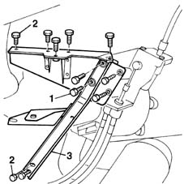

2125C14 gear hand-lever mount bracket (one)- r r
- Path
- Procedures > 21 GEARBOX > 2125 MANUAL GEARBOX EXTERNAL CONTROLS > 2125C manual gearbox external control (cables) > 2125C14 gear hand-lever mount bracket (one)- r r
- Kind
- repair procedure (removal / refitting; the operation number is the code)
- Applies to
- all engines; all production periods
- Interactive page
- https://sloeber94.github.io/elrnDB-fMltpl/en/#/2891548
Applies to: all engines; all production periods
 Removing
Removing
 Refitting
Refitting7040A09 passenger air bag compartment cover - r r
2125C24 gear lever knob - r + r
7065C10 air conditioning control panel - r+r
7040A11 control panel lid - r + r
5560B10 analogue control panel - r+r
7040A77 glass holder on facia trim - r r
7010M16 rear electric window enablement switch - r+r
7040A96 facia glove compartment flap (1) lh or rh - r r
5580C26 LOCK BARREL KEY/SWITCH for deactivating passenger 'AIR BAG - R.R.
7040A44 facia lh side cover - r r
7040A45 facia rh side cover - r r
7040A25 central facia trim - r r
5540C18 headlamp/light cluster alignment correction motor switch - r+r
7025A24 boot lid opening lever - r+r
7040L42 sill plate connection of one front door (1), lh or rh - r r
5010B24 under-facia air ducts r r
1. Undo the bolts securing the gear lever mounting.
2. Undo the bolts securing the bracket to the chassis.
3. Remove the bracket securing the mounting from the interior compartment.

Applies to: all engines; all production periods
Refitting
RemovingFit the bracket and tighten the bolts securing it to the chassis.
 | Fastening | Component | Ø | Value (daNm) |
|---|---|---|---|---|
- | Bolt | GEAR CONTROL LINK MOUNT BRACKET | M8 | 2.2 |
Fit the lever mounting and tighten the bolts to torque.
| Fastening | Component | Ø | Value (daNm) |
|---|---|---|---|---|
- | Bolt | GEAR CONTROL LINK MOUNT | M8 | 2.2 |
5010B24 under-facia air ducts r r
7040L42 sill plate connection of one front door (1), lh or rh - r r
7025A24 boot lid opening lever - r+r
5540C18 headlamp/light cluster alignment correction motor switch - r+r
7040A25 central facia trim - r r
7040A45 facia rh side cover - r r
7040A44 facia lh side cover - r r
5580C26 LOCK BARREL KEY/SWITCH for deactivating passenger 'AIR BAG - R.R.
7040A96 facia glove compartment flap (1) lh or rh - r r
7010M16 rear electric window enablement switch - r+r
7040A77 glass holder on facia trim - r r
5560B10 analogue control panel - r+r
7040A11 control panel lid - r + r
7065C10 air conditioning control panel - r+r
2125C24 gear lever knob - r + r
Topics linked from this page (21)
- 2125C24 gear lever knob - r + r
- 5010B24 under-facia air ducts r r
- 5540C18 headlamp/light cluster alignment correction motor switch - r+r
- 5560B10 analogue control panel - r+r
- 5570T80 car radio unit - r+r
- 5580C26 LOCK BARREL KEY/SWITCH for deactivating passenger 'AIR BAG - R.R.
- 7010M16 rear electric window enablement switch - r+r
- 7025A24 boot lid opening lever - r+r
- 7040A04 facia lower trim-r r
- 7040A09 passenger air bag compartment cover - r r
- 7040A11 control panel lid - r + r
- 7040A25 central facia trim - r r
- 7040A37 fuse box cover - r r
- 7040A44 facia lh side cover - r r
- 7040A45 facia rh side cover - r r
- 7040A77 glass holder on facia trim - r r
- 7040A96 facia glove compartment flap (1) lh or rh - r r
- 7040L20 tunnel trim - r r
- 7040L42 sill plate connection of one front door (1), lh or rh - r r
- 7065C10 air conditioning control panel - r+r
- 7065C42 ashtray (one) r+r